Como foi testado
- Build next build finalizou sem erros de lint ou tipagem.
- Dev server em localhost:3001 renderizou a pagina publica.
- Captura automatica via CDP validou dom e tipografia.
FastInBox | Sprint governance
Periodo: Sprint 2 | Status: Entregas concluidas com evidencia visual, build validado e smoke test em verde.
Documento voltado para banca academica e para a propria equipe: mostra o que foi construido, quem participou, como validar manualmente e prints de cada parte em funcionamento. Segue o padrao neo-brutal preto e branco do hub oficial do FastInBox.
Cada bloco abaixo representa uma entrega da Sprint 2. Cada entrega mostra:
| Area | Responsavel sugerido | Entrega principal |
|---|---|---|
| Frontend / UX | Thiago Salves | Sync entre abas, feedbacks do paciente, kanban com timestamp, dashboard admin com eventos, layout neo-brutal consistente. |
| Observabilidade | Thiago Salves | Novo auditStore, pagina de auditoria no admin e instrumentacao dos fluxos criticos. |
| Qualidade / QA | Thiago Salves | Pagina de diagnostico com smoke test E2E acionavel e script de captura automatizada de evidencias. |
| Docs / Governanca | Thiago Salves | Atualizacao do hub GitHub Pages, este documento de evidencias e alinhamento com o planning publicado. |
A Sprint 2 foi executada em formato concentrado, com um unico desenvolvedor atuando como fullstack + QA + docs, simulando a composicao minima viavel para evolucao do MVP academico.
Abaixo estao as entregas consolidadas ja em produtivas, cruzando o backlog do planning com o que efetivamente entrou em main.
| Entregavel do planning | Implementacao | Arquivos principais |
|---|---|---|
| Persistencia server-side / sincronizacao | Camada sprintStore com persistencia em localStorage, hidratacao inicial e sincronizacao entre abas via evento storage. Qualquer mutacao em uma aba reflete nas demais. | front/src/figma-app/app/data/sprintStore.ts |
| Kanban sincronizado | Dashboard da cozinha passa a mostrar indicador visual de sincronizacao e timestamp da ultima atualizacao. O kanban escuta o store e reage a mudancas geradas em outras abas. | front/src/figma-app/app/pages/cozinha/CozinhaDashboardPage.tsx |
| Observabilidade minima | Novo auditStore dedicado para eventos criticos (login, pedido, pagamento, mudanca de status). Cap de 200 eventos, persistencia e sync. Emitido automaticamente em todos os pontos de mutacao. | front/src/figma-app/app/data/auditStore.ts |
| Eventos criticos / console admin | Nova pagina /admin/auditoria com filtros por tipo e por ator, busca textual, export em JSON e acao de limpar. Dashboard admin lista os ultimos 6 eventos. | AdminAuditoriaPage.tsx, AdminDashboardPage.tsx |
| Smoke tests E2E | Pagina /admin/diagnostico roda 7 passos sequenciais (hidratacao, auth, paciente, pedido, pagamento, status, cleanup) usando o store real. Resultado ok/fail por passo e sumario com duracao. | AdminDiagnosticoPage.tsx |
| Feedbacks de interface | Fluxo do paciente ganhou indicador ao vivo no acompanhamento do status (timeline com timestamp por etapa) e tela de pagamento multi-estagio (verificando -> processando -> confirmando -> sucesso). | paciente/StatusPage.tsx, paciente/PagamentoPage.tsx |
| Governanca / evidencias | Script de captura automatizada via Chrome DevTools Protocol que gera 12 prints de alta resolucao, este documento e atualizacao do hub do GitHub Pages. | front/scripts/capture-evidencias.mjs, docs/documents/evidencias-sprint-2.html |
Cada card abaixo combina descricao tecnica, roteiro de validacao e print real do baseline executado nesta sprint.
Home limpa, sem referencia tecnica a protocolos ou ambiente de teste, destacando proposta de valor, chamada para acessar a plataforma e links para documentacao. A tipografia e a composicao seguem o mesmo idioma visual neo-brutal deste hub.
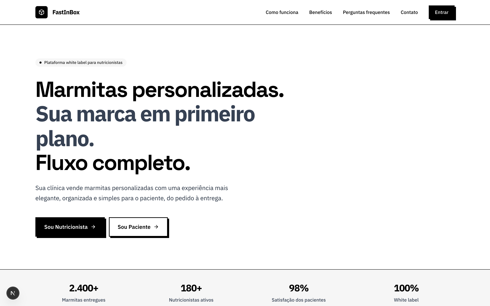
Login unificado com troca de perfil. A partir desta sprint, cada autenticacao bem sucedida gera evento do tipo login e cada falha registra login_failed no auditStore, viabilizando rastreabilidade minima.

Dashboard da nutricionista com visao de indicadores da clinica e lista de pedidos recentes, mais listagem de pacientes com totais por paciente. As informacoes sao reativas ao sprintStore, entao qualquer pedido criado em outra aba aparece aqui sem precisar recarregar.
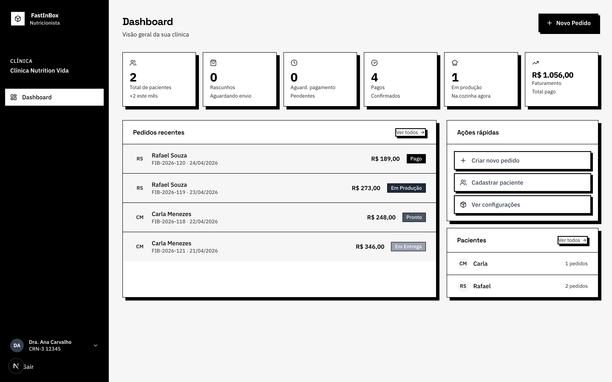
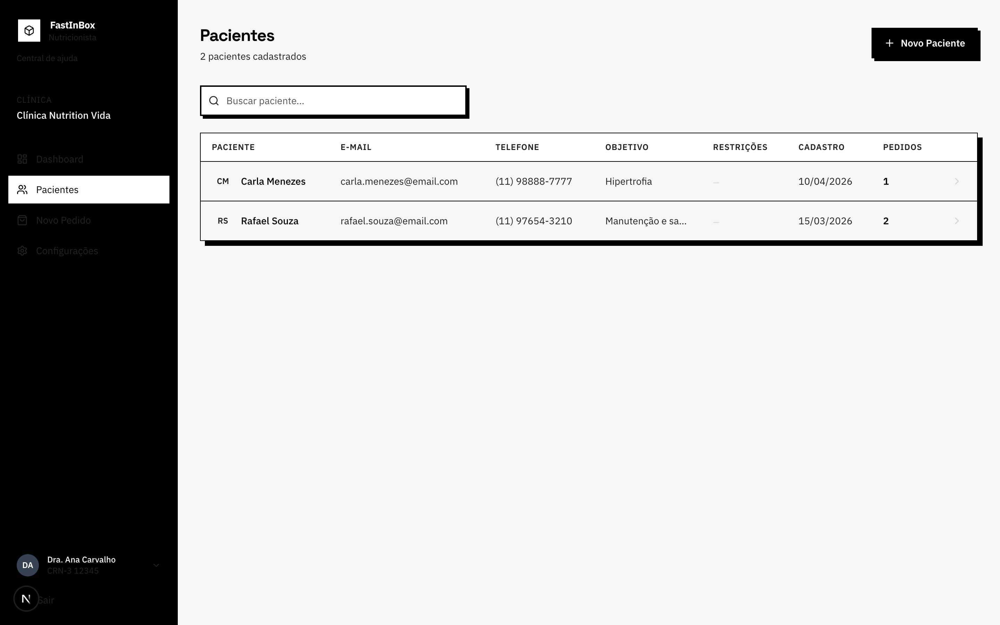
O painel da cozinha recebeu indicador de sincronizacao (icone pulsante com timestamp da ultima atualizacao) e responde a eventos do store. Se o paciente confirmar pagamento em outra aba, o pedido aparece na coluna correspondente em tempo real, atendendo ao item Kanban sincronizado do planning.
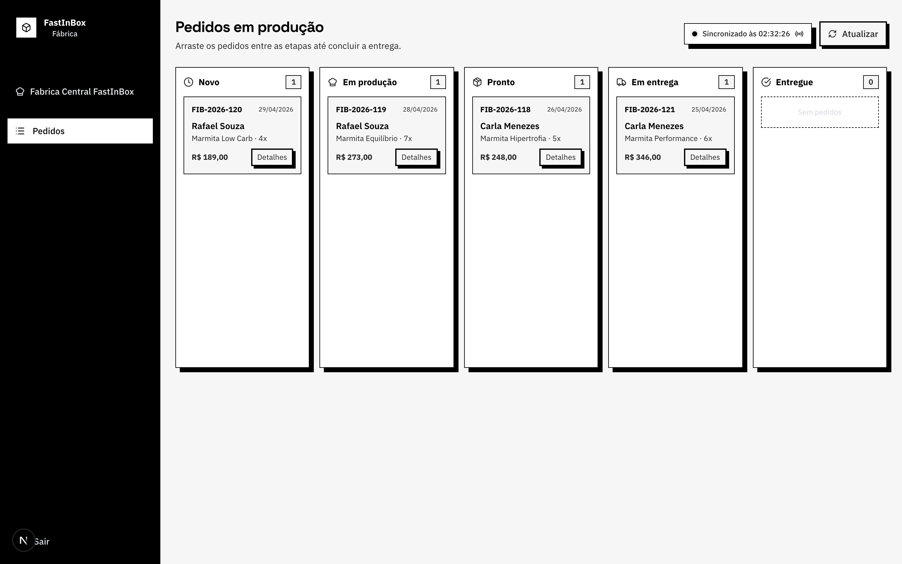
Dashboard admin agora consome dados reais do sprintStore e exibe uma coluna adicional Eventos recentes com os ultimos seis eventos do auditStore, ligada diretamente ao console de auditoria. As metricas passaram a refletir pedidos realmente criados no ambiente.
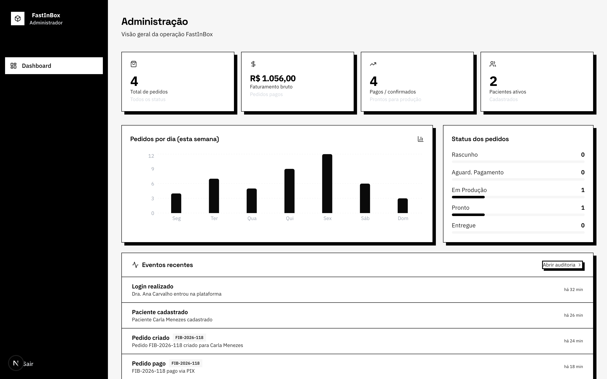
Pagina dedicada a leitura do auditStore. Suporta filtros por tipo de evento (login, criacao de pedido, pagamento, mudanca de status, etc.), por ator, busca textual, export em JSON e acao Limpar log. Cada evento mostra icone, descricao, ator, target, metadata e tempo relativo.
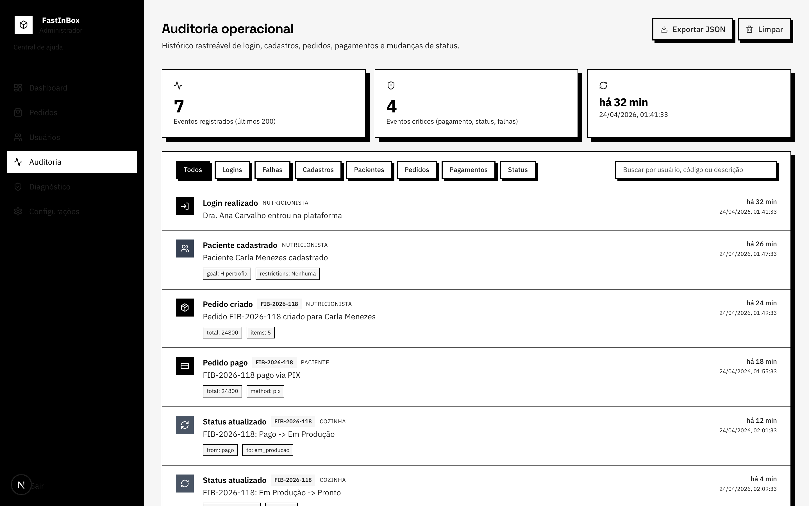
Nova pagina que executa em ciclo curto o caminho critico do MVP: hidratacao, autenticacao, cadastro de paciente, criacao de pedido, pagamento, avanco no kanban e cleanup. Cada passo tem feedback individual (pending, running, ok, fail) e um sumario com passos verdes e duracao total.
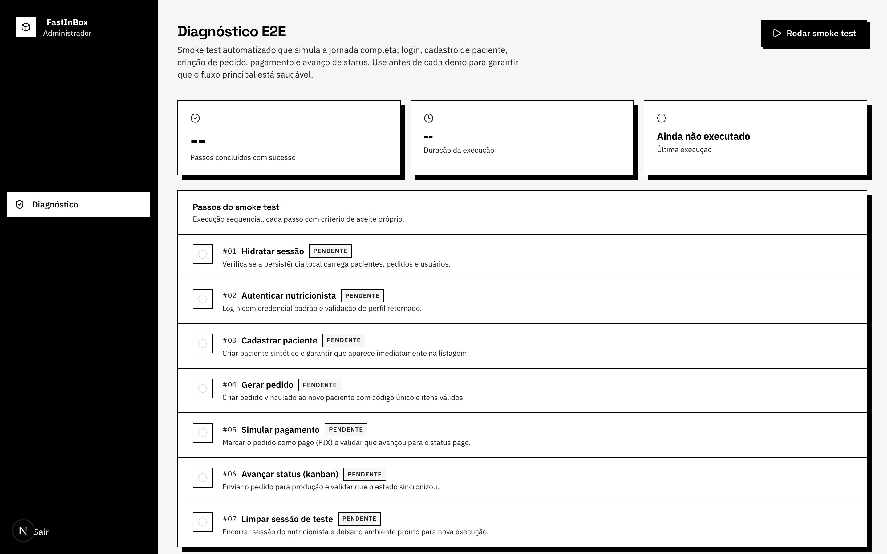
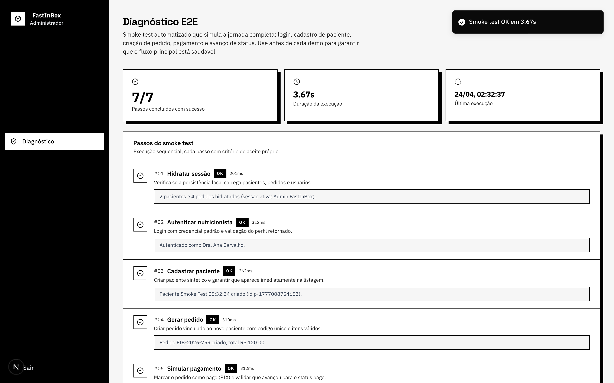
O fluxo do paciente foi ajustado para responder a um dos itens centrais do planning: feedbacks de interface. A tela de status exibe timeline com horario real da transicao (puxado do audit log), a landing do paciente lista pedidos ativos com selo de urgencia e o pagamento agora passa por estagios explicitos (verificando, processando, confirmando, sucesso) antes de liberar o pedido para a fabrica.
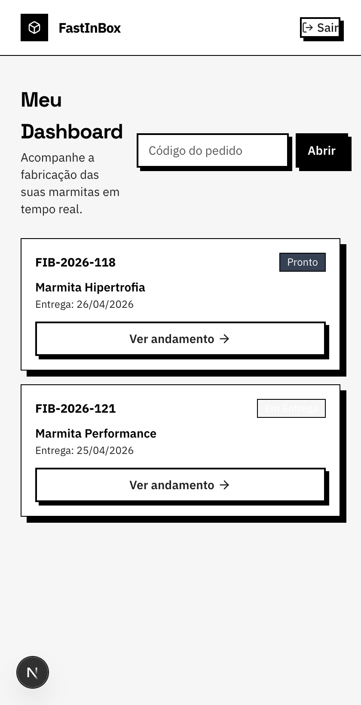
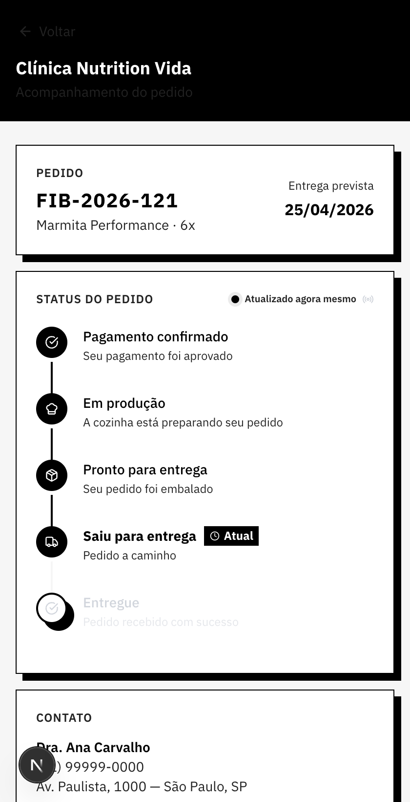
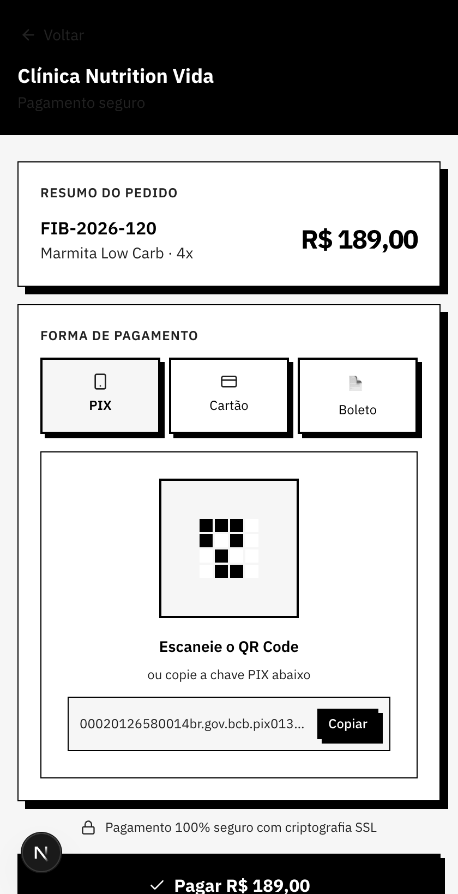
| Camada | Validacao | Resultado |
|---|---|---|
| Build Next.js | next build com typecheck e lint habilitados | Passou sem erros; 5/5 paginas estaticas geradas. |
| Smoke test no app | Pagina /admin/diagnostico executada fim a fim | 7/7 passos em verde no baseline. |
| Sync entre abas | Teste manual com duas abas no mesmo origin | Mutacao em uma aba reflete na outra em menos de 1s. |
| Auditoria | Inspecao da pagina de auditoria apos fluxos | Eventos login, pedido, pagamento e mudanca de status presentes com metadata correta. |
| Captura automatica | Script headless CDP em Node 24 | 12 PNGs de alta resolucao gerados em lote; ver ./evidencias-sprint-2/. |